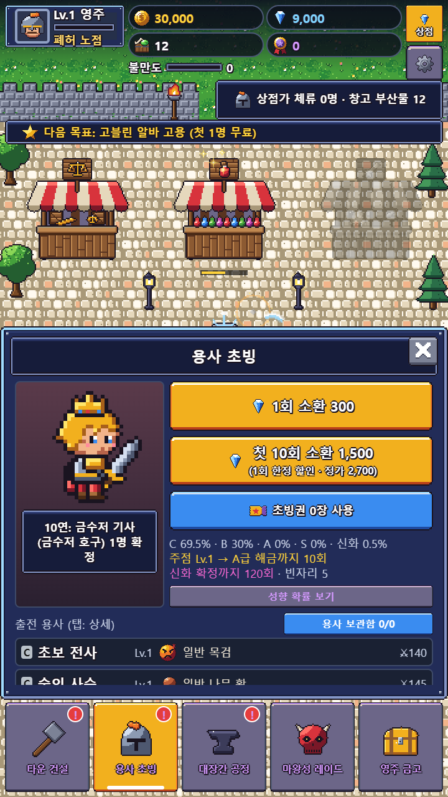
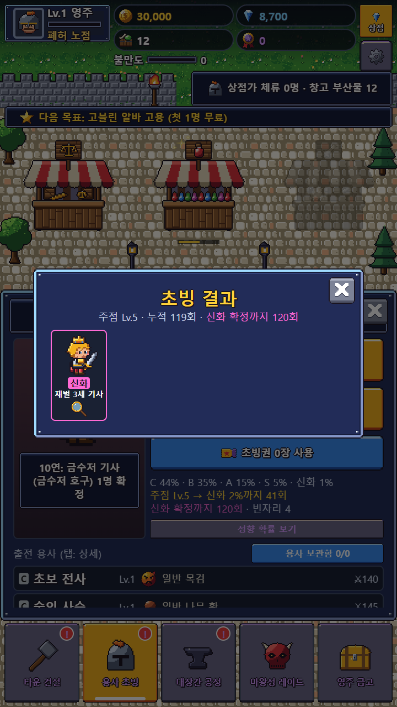
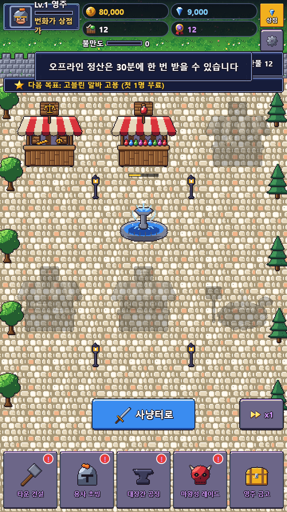
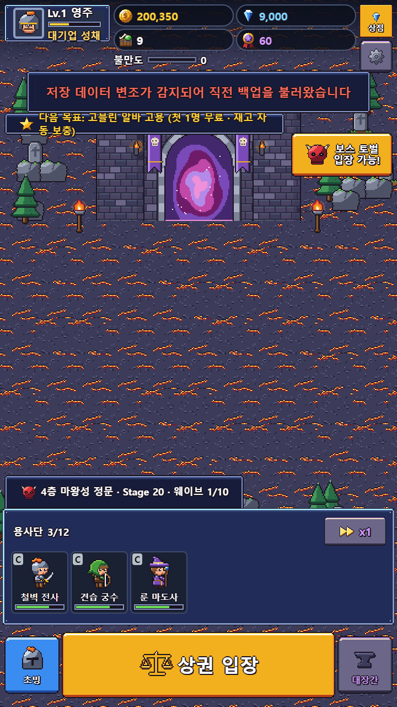
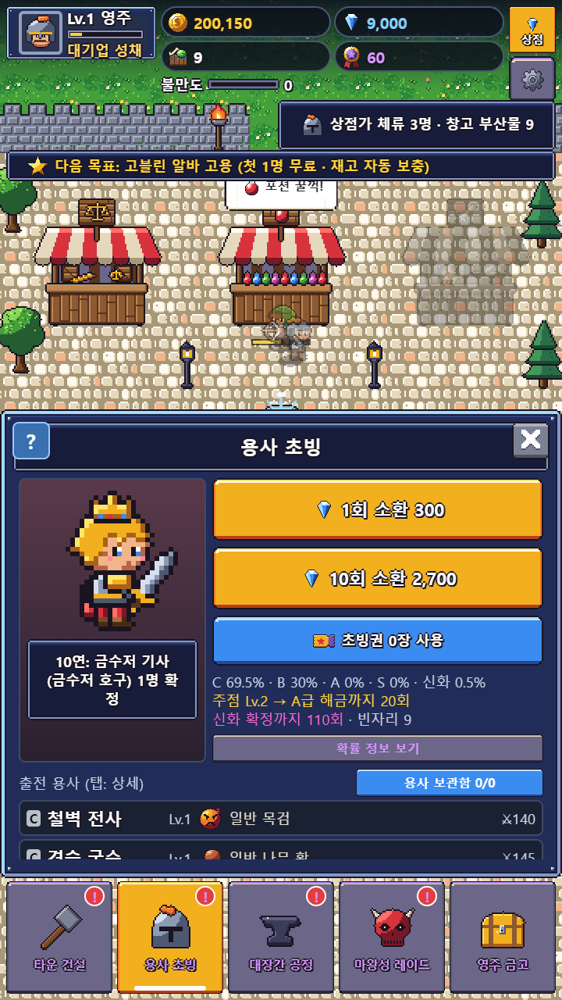
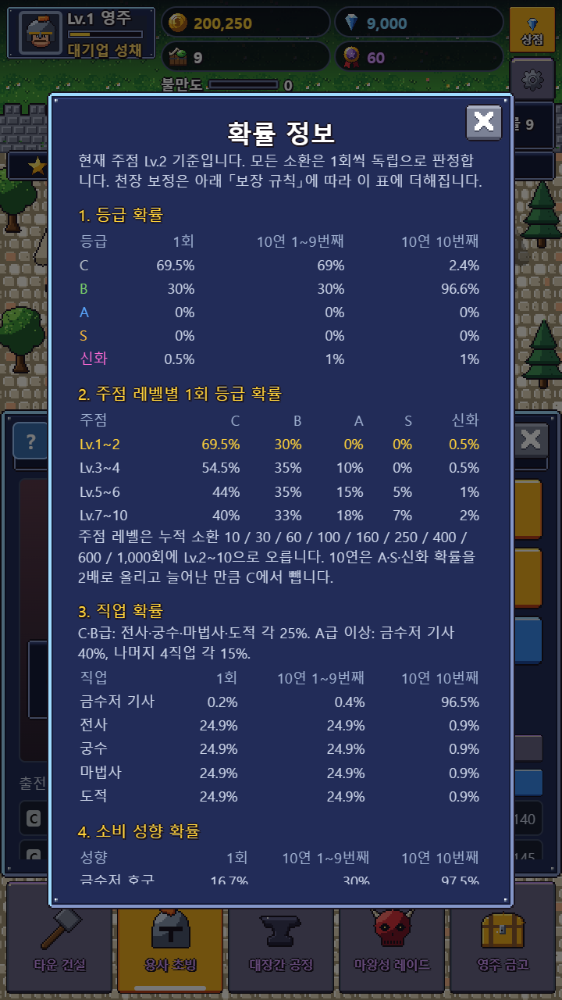
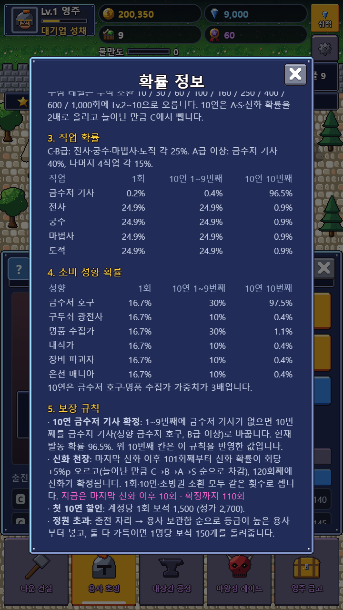

왜 어라이즈인가
지원하는 회사의 게임 중 내 게임과 겹치는 시스템이 가장 많은 것을 골랐습니다.
장르는 다릅니다(수집형 액션 RPG ↔ 세로형 방치 타이쿤). 그래서 전투 조작은 빼고, 두 게임이 함께 가진 시스템만 비교 대상으로 잡았습니다.
비교 축 6개
내 게임 수치는 전부 실제 코드(game.js)에서 읽었고, 어라이즈 수치는 공개 자료 18개에 신뢰도 A~D를 붙여 사실과 추정을 나눴습니다.
역기획 방법
코어 루프를 먼저 정의하고, 숫자는 직접 계산해서 검증했습니다.
2.1어라이즈 코어 루프 (3층)
판정: 행동 제한은 하루 열쇠 10개(깨야만 줄어듦)에만 있고, 진짜 병목은 콘텐츠별 전용 재료와 소환 재화입니다.
2.2숫자는 직접 계산해서 맞춰 봄 — 소환 천장
공략 두 곳의 확률(SSR 1.2%, 64회부터 회당 +5.8%p, 80회 확정)을 식으로 세우고, 79회째 94.0% → 80회 확정으로 이어지는지 확인해 기대 소환 수 46.6회를 구했습니다. 같은 방식으로 내 게임의 신화 기대값(약 275회)을 계산해 나란히 놓았습니다.
세로축: 그 횟수까지 최고 등급(SSR·신화)을 한 번 이상 얻었을 확률. 게임 1은 1회 소환·주점 Lv.1 기준입니다. 점선은 수정 전입니다.
| 지표 | 어라이즈 (SSR) | 게임 1 수정 전 (v6) | 게임 1 수정 후 (v7) |
|---|---|---|---|
| 처음 나올 수 있는 회차 | 1회차부터 1.2% | 누적 250회 전에는 0% | 1회차부터 0.5% |
| 천장 | 64회부터 +5.8%p, 80회 확정 | 없음 | 101회부터 +5%p, 120회 확정 |
| 첫 최고 등급까지 기대 소환 | 46.6회 | 약 275회 | 82.0회 |
18개 항목 비교
항목마다 두 게임의 근거를 적고 판정했습니다. 판정 결과로 '지킬 것'과 '고칠 것'을 나눴습니다.
| # | 항목 | 나 혼자만 레벨업: 어라이즈 | 던전 앞 자본주의 상점가 | 판정 |
|---|---|---|---|---|
| C2 | 플레이어 역할 | 성진우를 직접 조작 | 용사를 손님으로 받는 영주 | 게임 1 차별 |
| C3 | 코어 루프 | 열쇠 → 전투 → 보상 → 성장 | 사냥 → 퇴근 → 구매 → 골드 회수 → 건설·재고 | 구조 다름 |
| C4 | 전투 조작 | 수동 액션 + 자동 + 소탕 | 전부 자동, 개입은 경영 결정뿐 | 어라이즈 우위 |
| C5 | 행동 제한 | 게이트 열쇠 하루 10개 | 없음 (재고·불만도·퇴근 주기가 속도 결정) | 게임 1 우위 |
| C6 | 방치 · 오프라인 | 일부 (세부 미확인) | 분당 수입 15% × 최대 2시간 + 통행세 | 게임 1 우위 |
| C7 | 최고 등급 확률 | SSR 1.2% 고정 | 신화 0% → 누적 250회 후 2% | 어라이즈 우위 |
| C8 | 천장 | 80회 확정, 64회부터 소프트 | 없음 | 어라이즈 우위 |
| C9 | 10연 보장 | 확인 못 함 | 10연마다 금수저 기사 1명 확정, 첫 10연 할인 | 게임 1 우위 |
| C10 | 중복 처리 | 돌파 재료 (헌터 5단계, 무기 ★5) | 중복 개념 없음, 넘치면 보석 환급 | 어라이즈 우위 |
| C11 | 소환 전 안내 | 팝업 세부 미확인 | "출전 n · 보관함 n · 환급 n"을 소환 전에 보여 줌 | 게임 1 우위 |
| C12 | 성장 축 | 5축 이상 | 용사·무기·건물·영주·명성 | 어라이즈 깊음 |
| C13 | 성장 상한 연결 | 헌터 레벨 ≤ 성진우 레벨 | Stage → 정원, 영주 Lv → 보관함 | 비슷 |
| C14 | 온보딩 | 군주의 이정표 31챕터 | "다음 목표" 한 줄 | 어라이즈 우위 |
| C15 | 반복 · 시즌 콘텐츠 | 게이트, 주간·2주 시즌 콘텐츠 | Stage 1~20, 레이드 1종 | 어라이즈 우위 |
| C16 | 소셜 | 길드, 길드 상점 | 없음 | 어라이즈 우위 |
| C17 | BM | 10종 이상 (일일 팩·구독·패스) | 영구 패스 1종 + 보석 3종 + 광고 | 게임 1 단순 |
| C18 | 저장 · 보안 | 서버 저장 (추정) | 브라우저 저장, 시계 되돌림만 무시 | 어라이즈 우위 |
C1(장르·화면)은 비교 대상에서 뺐습니다. 출처: 어라이즈 역기획서 11.2절.
3.1비교 결과를 둘로 나눔
지킬 것 7개
- 행동력 벽이 없다 — 세션 길이를 플레이어가 정함
- 소환 전에 결과를 알려 준다 — 재화를 쓰기 전에 손해를 앎
- 10연 보장이 처음부터 보인다
- 누적 소환이 되돌아가지 않는 진행 — 주점 레벨
- BM이 단순하고 핵심이 편의
- 방치 보상이 규칙으로 명시
- 규칙이 판타지를 만든다 — 바가지·불만도·소비 성향
고칠 것 10개 (우선순위)
- P1 F1 최고 등급 250회 잠김·천장 없음 · F2 저장·정산 조작 가능 · F3 확률 고지 일부만
- P2 F4 중복 용사 가치 없음 · F5 장기 목표판 없음 · F6 반복 콘텐츠 부족 · F7 보석 용도 겹침 · F8 BM 상한 낮음
- P3 F9 전투 개입 없음 · F10 소셜 없음
고칠 때 지킬 것을 깨지 않도록 했습니다. 예: F1은 '보이는 진행(주점 레벨)'은 남기고 잠금 거리만 줄임.
고친 과정: P1 세 가지
보고서의 개선 명세를 그대로 넣지 않고, 기획 방향을 명령으로 덧붙였습니다. 결과는 기획서 v7·v8에 남겼습니다.
최고 등급이 250회 동안 잠겨 있고 천장이 없다
신화 1명까지 기대 보석 약 73,050개 (₩60만 선)
- 내 명령
- "여기서 개선할 점에서 첫번째 개선해줘"
- 어라이즈 참고
- 1회차부터 SSR 1.2%, 64회부터 소프트 천장, 80회 확정
- 지킨 것
- 누적 소환이 주점 레벨로 오르는 '보이는 진행'(G4)은 그대로 두고, 확률 보너스로만 바꿈
- 검증
- 주점 Lv 4구간 × 회차 × 1회/10연 확률 합계 100% · 20만 회 시뮬레이션 신화 평균 81.6회, 최대 간격 114회 · 정확한 기대값 82.0회




저장과 오프라인 정산을 조작할 수 있다
- 내 명령
- "2번째 개선사항을 고치는데, 오프라인 최대보상은 2시간 기준이고, 추후 추가될 강화 시스템으로 늘어날 수 있도록 해 줘. 강화 시스템은 상권 증축과 비슷하지만 내용이 달라. 재화를 사용하게 할 시스템으로 구축할 거야."
- AI 질문 → 내 답
- 영업 수익과 통행세의 한도를 어떻게 할지 → "영업 수익·통행세 둘 다 2시간, 패스는 둘 다 8시간"
- 보고서와 다른 점
- 보고서는 서버 권위만 제안했지만, 앞으로 넣을 강화 시스템이 한도를 늘리는 연결 구조(항목 0개로 시작)를 함께 만듦 → 재화 소비처를 미리 설계
- 검증
- SHA-256·HMAC 표준 예제 일치 · 3시간 부재 → 2시간분만 정산 · 시계 되돌림 0G · 저장본 골드 수정 → 변조 감지·백업 복원 · 서버가 없어 보석·소환의 서버 확정은 미적용(한계로 기록)



확률 고지가 일부만 보인다
- 내 명령
- "3번째 개선사항도 진행하는데, 왼쪽 상단에 ? 버튼을 통해 확인할 수 있도록 해줘."
- 왜 중요한가
- 한국 출시 시 확률형 아이템 정보 공개 의무(게임산업법, 2024-03-22 시행)
- 검증
- 표의 확률식이 실제 소환 코드와 같은지 대조 · 10연 10번째 금수저 기사 96.5%




결과
숫자로 본 변화
전체 과정은 기획서 v7·v8의 '사용자 명령 원문 → 구현 요약 → 이전 대비 변경 → 명령 해석 → 검증 → 남은 과제' 순서로 기록돼 있습니다. 게임 화면 변화는 v1 · v8 비교 영상의 '확률 정보' 장면에서도 볼 수 있습니다.
남은 과제
P2·P3는 다음 개선 목록입니다. 제안 수치는 모두 가설이라 시뮬레이션으로 검증한 뒤 넣을 계획입니다.
| # | 고칠 점 | 어라이즈 참고 | 제안 (가설) | 상태 |
|---|---|---|---|---|
| F1 | 신화 잠금 · 천장 없음 | 80회 확정 | 0.5% 개방 · 120회 천장 | ✔ v7 반영 |
| F2 | 저장 · 정산 조작 | 서버 확정 (추정) | 한도·간격·서명 + 서버 권위 | ◐ v8 일부 (서버 없음) |
| F3 | 확률 고지 일부 | — | 확률 정보 한 화면 | ✔ v8 반영 |
| F4 | 중복 용사 가치 없음 | 중복 = 돌파 재료 | 같은 용사 3명 → ★+1, 방출 시 증표 | 다음 |
| F5 | 장기 목표판 없음 | 군주의 이정표 | 「영주의 장부」 미션판 | 다음 |
| F6 | 반복 콘텐츠 부족 | 주간 보스 · 2주 시즌 | 주간 「상권 대목」, 레이드 시간 등급 | 다음 |
| F7 | 보석 용도 겹침 | — | 분수대 연설을 골드 비용으로 | 다음 |
| F8 | BM 상한 낮음 | 일일 팩 · 시즌 패스 | 회원권 · 시즌 패스 2종만 | 다음 |
| F9 | 전투 개입 없음 | 극한회피 · 무기 교체 | 보스 포효 직전 「호루라기」 | 출시 후 |
| F10 | 소셜 없음 | 길드 상점 | 「상인 길드」 공동 매출 | 출시 후 |
어라이즈 수치는 공개 자료·공략 기준(신뢰도 표기)이며 직접 계측한 값이 아닙니다. 게임 1 수치는 코드 기준입니다.